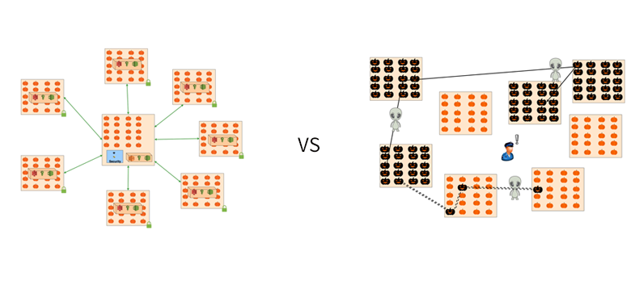
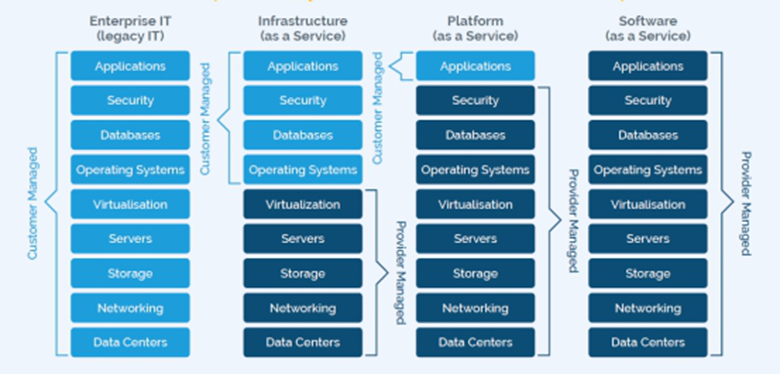
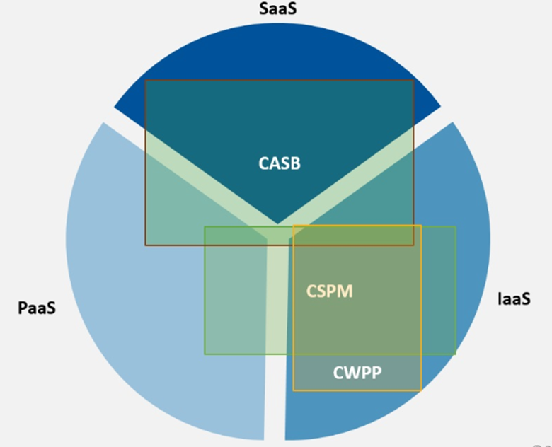
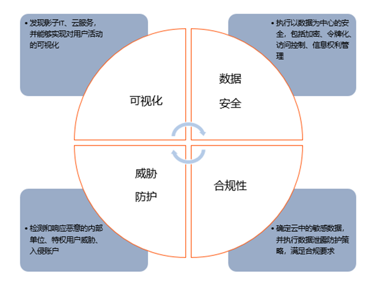
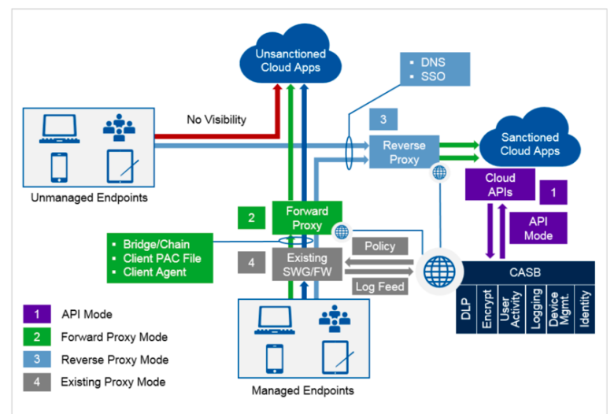
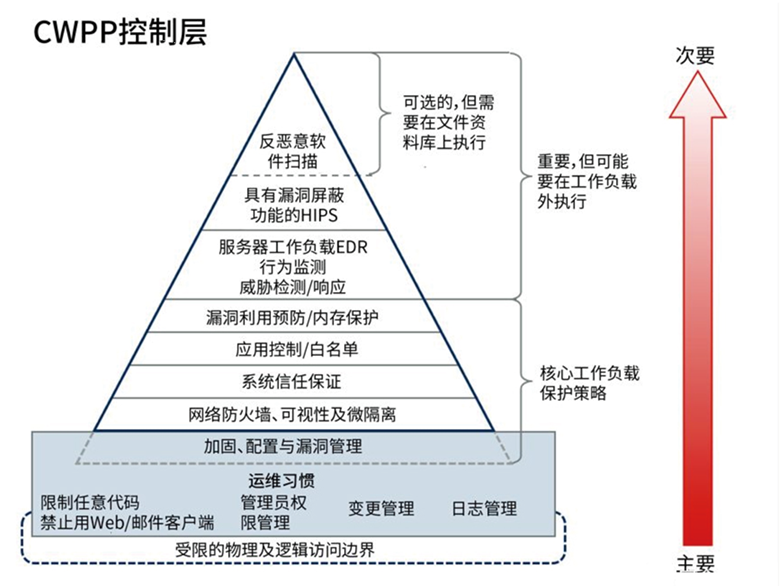

云安全工具
近年来，随着云计算市场的发展，不少企业都开始选择业务上云，并且企业并不只是采用一种云，而是采用多种云相互结合的方式，例如，公有云、私有云、混合云等等。企业采用多云方式已发展为主流趋势。
然而，业务上云之后也并非一劳永逸。由于云安全策略的制定总是滞后于云服务的使用，存储在云中的客户数据的泄露风险也相应增加。国内外的类似安全事件也层出不穷，例如今年，AWS托管的Capital One美国和加拿大1.06亿客户的个人数据发生泄露。下图比较形象地展示出，云计算还面临多账号权限管理、可视化问题以及一系列合规问题。

由于“云安全”的概念所涉范围非常广，本文只针对Gartner提出的比较流行的三类云安全产品进行阐述。Gartner曾提出三大云安全管理工具，分别是CASB、CSPM和CWPP。虽然这三大工具在一些功能上有所重叠，但三者之间更多是起到互补作用。下文首先简单介绍了三大安全工具在应用场景上的差别，然后介绍了三大云安全工具的详细应用情况。对于这三类产品不熟悉的读者可以阅读后文的详细内容。
为了切实解决云安全问题，供应商和企业都需要共同承担责任，双方各自负责处于其控制之下的技术。双方各自需要承担哪些职责，是由具体场景决定的：本地部署、IaaS、PaaS或SaaS。
在传统的企业级IT场景下，所有基础架构均在本地运行，企业负责所有安全措施； 在IaaS场景下，云提供商负责保护后端数据中心、网络、服务器和虚拟化；企业负责保护有效负载，例如操作系统、数据库、安全性和应用程序。这种情况下，企业要负责保护自己在公有云中运行的工作负载；
而在PaaS这种无服务器场景下，企业则主要负责保护应用程序； 对于SaaS场景，应用程序和数据的安全性全部由服务提供商负责，而访问安全性则取决于企业及其用户。

根据上文对企业和供应商责任的划分，我们可以针对不同场景选择不同的安全工具。图3很好地说明了三大安全工具适合哪类场景。首先从覆盖面积看，CWPP只覆盖了IaaS场景，这说明CWPP只适合IaaS服务。而CASB则覆盖了SaaS、PaaS、IaaS三个区域，但是主要覆盖面积体现在SaaS上，其应用场景也不言而喻。最后，根据CSPM的覆盖情况，也可以了解其主要是解决IaaS安全问题，同时能解决部分PaaS安全问题。

下文将对适用于不同层面的三大安全工具分别进行详细讲解。
云访问安全代理（CASB）
CASB出现最早是为解决影子资产问题，尤其是随着SaaS服务的快速发展，从底层硬件资源到上层软件资源，最终用户都无法实施控制。而CASB能很好解决此类问题，并且很多用户在使用CASB产品之后，发现自身企业的云服务数量是他们所认知十倍之多。良好的使用效果，使CASB产品得到了快速发展。Gartner也曾预测，到2022年，将有60％的大型企业使用CASB。
CASB的功能主要是作为SaaS应用程序提供，偶尔也会用于本地的虚拟机和物理设备。在大多数用例中，SaaS交付明显更受欢迎。CASB核心价值是解决深度可视化、数据安全、威胁防护、合规性这四类问题。

(1) 深度可视化—CASB提供了影子IT发现、组织机构云服务格局的统一视图以及从任何设备或位置访问云服务中数据的用户的详细信息。
(2) 数据安全性—CASB能够实施以数据为中心的安全策略，以防止基于数据分类、数据发现以及因监控敏感数据访问或提升权限等用户活动而进行有害活动。通常是通过审计、警报、阻止、隔离、删除和只读等控制措施来实施策略。DLP（数据丢失防护）功能很普遍，并且是仅次于可视化的最常用的一项控制措施。
(3) 威胁防护—CASB通过提供AAC来防止有害设备、用户和应用程序版本来访问云服务。可以根据登录期间和登录之后观察到的信号来更改云应用程序功能。CASB此类功能的其他示例包括通过嵌入式UEBA识别异常行为、威胁情报、网络沙箱以及恶意软件识别和缓解。
(4) 合规性—CASB可帮助组织机构证明，是组织机构在管理云服务的使用情况。CASB提供了信息来确定云风险偏好并确定云风险承受能力。通过各种可视化、控制和报告功能，CASB有助于满足数据驻留和法律合规性要求。
CASB可以通过API、转发代理、反向代理等方式来实现，如下图所示。

云工作负载保护平台（CWPP）
云工作负载保护平台（CWPP）市场是指以工作负载为中心的安全产品，旨在解决现代混合云、多云数据中心基础架构中服务器工作负载的独特保护要求。CWPP应该不受地理位置的影响，为物理机、虚拟机、容器和无服务器工作负载提供统一的可视化和控制力。CWPP产品通常结合使用网络分段、系统完整性保护、应用程序控制、行为监控、基于主机的入侵防御和可选的反恶意软件保护等措施，保护工作负载免受攻击。（关于CWPP产品市场近几年来的发展演进，请参考之前的《干货|CWPP产品市场演进》。）
下图显示了现代混合多云数据中心架构中工作负载保护策略的主要构成要素。

上图是一个分层金字塔，底部是一个矩形基座。服务器工作负载的安全性源于阴影基础中良好的运维习惯。任何工作负载保护策略都必须从此处开始，并确保满足以下条件：
任何人（攻击者或管理员）都很难从物理和逻辑上访问工作负载。
工作负载镜像仅包含所需的代码。服务器镜像中应禁止使用浏览器和电子邮件。
需要通过严格管理流程，才能更改服务器工作负载，并且通过强制性强身份验证来严格控制管理访问。
收集和监控OS和应用程序日志。
对工作负载进行固化、缩小容量及打补丁，减少攻击面。
总结
目前，Gartner提出的三大云安全工具CASB、CSPM、CWPP，针对基础架构中IaaS、PaaS和SaaS层中的不同安全问题，给出了针对性的解决方案。虽然这三大工具不一定能全面覆盖所有安全问题，却也为企业在采用云服务时，加强安全控制措施指明了方向，提供了思路，可以更好地针对具体问题制定具体的解决方案。
当然未来，随着云服务的不断发展，安全控制措施肯定也会紧跟云服务的发展步伐，为云服务的发展保驾护航。